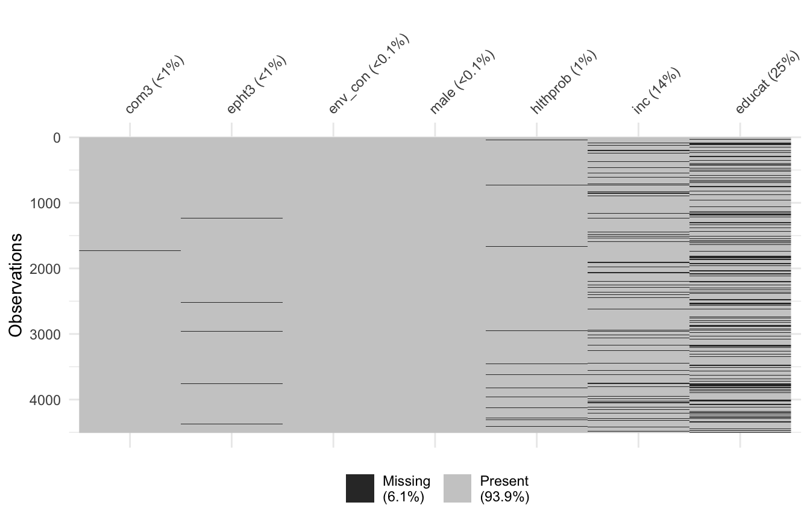
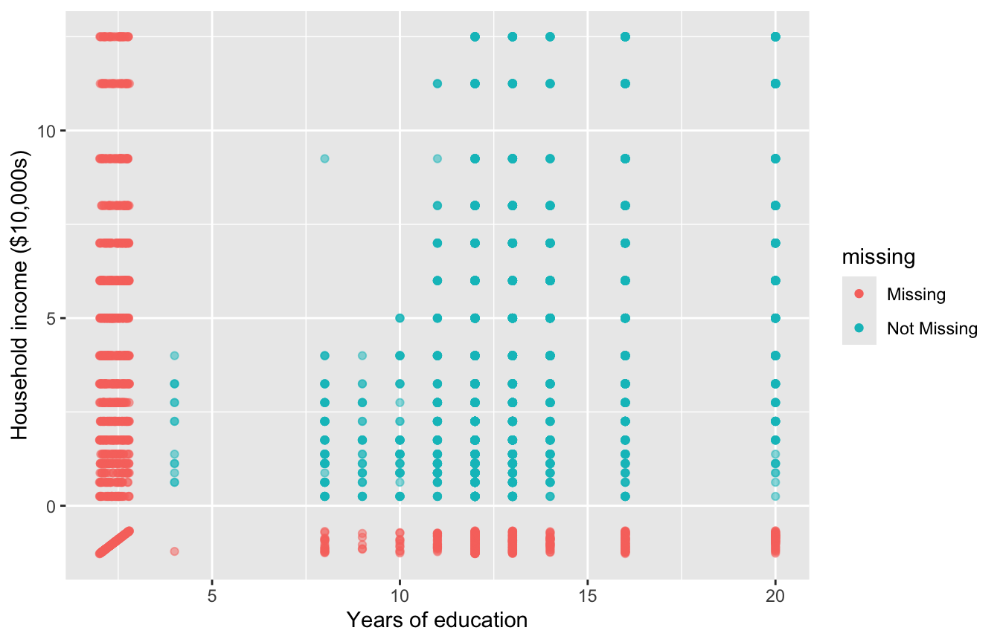
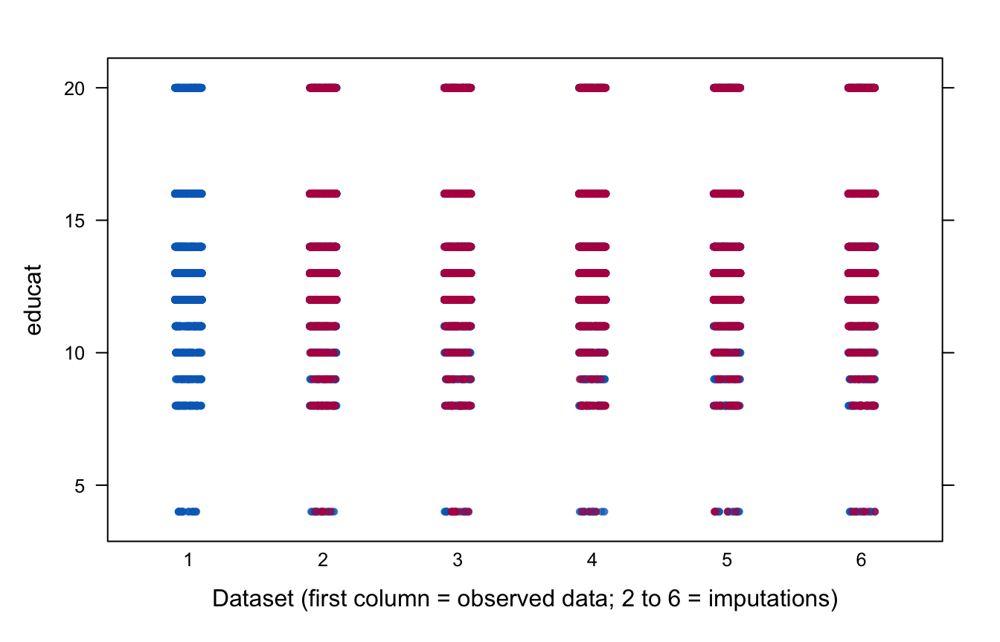

library(tidyverse)
library(haven)
library(psych)
library(naniar)
library(mice)7 Missing Data and Multiple Imputation
Almost every real dataset has missing values. By default, most R functions handle them with listwise deletion: any case missing a variable in the model is dropped. This can shrink the sample a great deal, and, if the missing cases differ from the others, it can bias the results. In this chapter, we explore patterns of missing data, ask why the data might be missing, and use multiple imputation to keep every case in the analysis.
7.1 The data
The data come from a 2004 survey of 4,508 Oregon residents about community and environmental health. Our outcome is a scale score for concern about the environment (env_con). The predictors are:
com3: how much the respondent feels a part of their community (1 to 5)epht3: concern about the impact of the environment on people’s health (1 to 4)male: 1 = male, 0 = not malehlthprob: 1 = reported health problems, 0 = noneinc: household incomeeducat: highest year of education completed
Income is recorded in dollars, so a one-unit change is one dollar. We rescale it to units of $10,000, which makes its coefficient readable. We also drop the ID variable, which we do not need and should not be used to impute other values.
oregon <- read_dta("data/oregon2004.dta") |>
zap_labels() |>
mutate(inc = inc / 10000) |>
select(-ID)
describe(oregon, fast = TRUE)Notice that n differs across variables. That is the first sign of missing data.
7.2 What listwise deletion does
Here is the regression model we want to estimate:
model_listwise <- lm(env_con ~ com3 + epht3 + male + hlthprob + inc + educat,
data = oregon)
summary(model_listwise)
Call:
lm(formula = env_con ~ com3 + epht3 + male + hlthprob + inc +
educat, data = oregon)
Residuals:
Min 1Q Median 3Q Max
-1.95449 -0.46784 -0.02464 0.46097 1.93741
Coefficients:
Estimate Std. Error t value Pr(>|t|)
(Intercept) 1.329391 0.076023 17.487 < 2e-16 ***
com3 -0.048938 0.010677 -4.583 4.78e-06 ***
epht3 0.403737 0.014598 27.658 < 2e-16 ***
male -0.053063 0.024724 -2.146 0.0319 *
hlthprob 0.291145 0.028578 10.188 < 2e-16 ***
inc 0.003546 0.004128 0.859 0.3905
educat -0.003406 0.004705 -0.724 0.4691
---
Signif. codes: 0 '***' 0.001 '**' 0.01 '*' 0.05 '.' 0.1 ' ' 1
Residual standard error: 0.6341 on 2819 degrees of freedom
(1682 observations deleted due to missingness)
Multiple R-squared: 0.3075, Adjusted R-squared: 0.3061
F-statistic: 208.7 on 6 and 2819 DF, p-value: < 2.2e-16The output notes that more than 1,600 observations were deleted due to missingness. Thus, more than a third of the sample is gone.
7.3 Exploring missing data
miss_var_summary() from the naniar package counts and ranks the missing values for each variable:
miss_var_summary(oregon)A plot often makes the pattern easier to see. In vis_miss(), each row is a respondent, and black cells are missing values:
vis_miss(oregon)
Most of the missing data are in education (educat) and income (inc). geom_miss_point() shows how these two variables relate. Cases missing one variable are plotted below the axis of the other, so we can see where they fall on the variable they did report.
ggplot(oregon, aes(x = educat, y = inc)) +
geom_miss_point(alpha = 0.5) +
labs(x = "Years of education", y = "Household income ($10,000s)")
7.4 Why are the data missing?
How we should handle missing data depends on why it is missing. There are three possibilities:
- Missing completely at random (MCAR): missingness is unrelated to anything, observed or not. Listwise deletion loses power but does not introduce bias.
- Missing at random (MAR): missingness is related to other observed variables. Multiple imputation and full information maximum likelihood can correct for it.
- Missing not at random (MNAR): missingness is related to the missing values themselves (for example, people with high incomes declining to report income). No method fully corrects for this without strong assumptions.
7.4.1 Little’s MCAR test
Little’s test asks whether the data are consistent with MCAR. Its null hypothesis is that they are.
mcar_test(oregon)The test is significant, so we reject MCAR. Listwise deletion may therefore bias our results.
7.4.2 Predicting missingness
We cannot test MAR against MNAR directly. However, we can look for observed variables that predict missingness. If we find some, including them in the imputation model makes the MAR assumption more plausible. We start by creating indicators equal to 1 if a value is missing and 0 if not:
oregon_miss <- oregon |>
mutate(
educat_miss = if_else(is.na(educat), 1, 0),
inc_miss = if_else(is.na(inc), 1, 0)
)Then we use logistic regression (Chapter 6) to predict each indicator from the other variables:
glm(educat_miss ~ com3 + epht3 + env_con + male + hlthprob + inc,
family = binomial, data = oregon_miss) |>
summary()
Call:
glm(formula = educat_miss ~ com3 + epht3 + env_con + male + hlthprob +
inc, family = binomial, data = oregon_miss)
Coefficients:
Estimate Std. Error z value Pr(>|z|)
(Intercept) -1.356982 0.194055 -6.993 2.7e-12 ***
com3 0.088399 0.034098 2.593 0.00953 **
epht3 -0.039706 0.051897 -0.765 0.44422
env_con 0.073259 0.059079 1.240 0.21497
male -0.094493 0.078537 -1.203 0.22891
hlthprob -0.169365 0.093374 -1.814 0.06970 .
inc -0.007011 0.011854 -0.591 0.55425
---
Signif. codes: 0 '***' 0.001 '**' 0.01 '*' 0.05 '.' 0.1 ' ' 1
(Dispersion parameter for binomial family taken to be 1)
Null deviance: 4257.1 on 3774 degrees of freedom
Residual deviance: 4244.2 on 3768 degrees of freedom
(733 observations deleted due to missingness)
AIC: 4258.2
Number of Fisher Scoring iterations: 4glm(inc_miss ~ com3 + epht3 + env_con + male + hlthprob + educat,
family = binomial, data = oregon_miss) |>
summary()
Call:
glm(formula = inc_miss ~ com3 + epht3 + env_con + male + hlthprob +
educat, family = binomial, data = oregon_miss)
Coefficients:
Estimate Std. Error z value Pr(>|z|)
(Intercept) -1.500154 0.339533 -4.418 9.95e-06 ***
com3 0.001587 0.045496 0.035 0.9722
epht3 -0.132026 0.071900 -1.836 0.0663 .
env_con 0.157490 0.079415 1.983 0.0474 *
male -0.489780 0.112820 -4.341 1.42e-05 ***
hlthprob -0.303341 0.131099 -2.314 0.0207 *
educat -0.010996 0.018492 -0.595 0.5521
---
Signif. codes: 0 '***' 0.001 '**' 0.01 '*' 0.05 '.' 0.1 ' ' 1
(Dispersion parameter for binomial family taken to be 1)
Null deviance: 2581.9 on 3265 degrees of freedom
Residual deviance: 2551.6 on 3259 degrees of freedom
(1242 observations deleted due to missingness)
AIC: 2565.6
Number of Fisher Scoring iterations: 4Missingness on education is related to sense of community. Missingness on income is related to gender, health problems, and environmental concern. These results suggest that the data are not MCAR, and that several observed variables carry information about who is missing.
7.5 Multiple imputation
Multiple imputation replaces each missing value with a set of plausible values drawn from a model based on the observed data. The process has three steps:
- Impute: create several complete datasets, each with different imputed values.
- Analyze: fit the same model to each dataset.
- Pool: combine the results. The pooled standard errors include the extra uncertainty from not knowing the missing values.
7.5.1 Step 1: Impute
mice() creates the imputed datasets. Here, we create 5 (m = 5) using predictive mean matching (method = "pmm"), which fills each missing value with an observed value from a case with a similar prediction. Setting seed makes the imputations reproducible.
imputed <- mice(oregon, m = 5, maxit = 5, method = "pmm",
seed = 23284, printFlag = FALSE)Before using the imputations, we check that they look reasonable. In a strip plot, the first column shows the observed data and each of the next five shows one imputed dataset. Observed values are blue, and imputed values are red. Imputed values should fall within the range of the observed ones.
stripplot(imputed, educat ~ .imp, pch = 20, jitter.data = TRUE,
xlab = "Dataset (first column = observed data; 2 to 6 = imputations)")
7.5.2 Steps 2 and 3: Analyze and pool
with() fits the model to each imputed dataset, and pool() combines the results:
model_mi <- with(imputed,
lm(env_con ~ com3 + epht3 + male + hlthprob + inc + educat))
summary(pool(model_mi))7.5.3 Comparing the results
tibble(
term = names(coef(model_listwise)),
listwise = coef(model_listwise),
imputed = summary(pool(model_mi))$estimate
)In this example, the coefficients are similar under both approaches, and the substantive conclusions do not change. However, the pooled analysis uses all 4,508 respondents, so most standard errors are smaller. When the missing cases differ more from the complete ones, the two approaches can lead to different conclusions.